Le projet consiste à mettre en place un système d'information (SI) pour une petite entreprise en utilisant des machines virtuelles (VMs) interconnectées via un switch ou wifi. L'architecture proposée comprend un pare-feu avec DHCP, DNS, filtrage réseau et routage, deux clients (1 Windows et 1 Linux), un serveur Linux pour la sauvegarde du site web et un autre serveur Linux pour l'hébergement du site web.
L'accès au serveur de sauvegarde se fera uniquement via le réseau interne de l'entreprise, tandis que l'accès au site web sera possible depuis le réseau internet ou externe.
Les livrables attendus incluent un rapport de projet faisant état des solutions techniques et transverses mises en œuvre, une documentation d'architecture détaillant la mise en œuvre des bonnes pratiques et les configurations nécessaires pour mettre en place la solution, ainsi qu'une documentation d'exploitation détaillant l'utilisation des outils et services mis en place et les procédures de sauvegarde et de restauration du site web.
L'évaluation du projet se fera à travers une évaluation intermédiaire, une présentation finale sous forme de démonstration pour l'ensemble du projet, ainsi que des livrables (documentation et code) pour chaque partie du projet. Le projet inclut également des bonus tels que la mise en place d'un certificat auto-signé ou signé et l'explication de celui-ci sur le site web.
I. Introduction
L'objectif de cette documentation est de présenter l'architecture réseau et les services mis en place dans le cadre du Projet Infra. Elle permettra aux administrateurs système de comprendre la structure du réseau et les configurations nécessaires pour la mise en place des différents services.
II. Définition du réseau
Topologie du réseau
Description de la topologie physique et logique du réseau
Présentation des différents éléments constitutifs du réseau (switches, routeurs, firewalls, etc.)
Schéma de la topologie réseau
Description des hosts et des services implantés/répartis
Liste des différents serveurs (web, messagerie, DNS, etc.) et des clients du réseau
Répartition des services sur les différents serveurs
Architecture réseau (LAN, WAN, VLAN)
Description des différents segments du réseau (LAN, WAN, VLAN)
Explication de la configuration des différents segments du réseau
III. Bonnes pratiques
Principes de sécurité
Sauvegarde des données
Configuration du pare-feu
Procédures de maintenance (mise à jour des équipements, surveillance du réseau)
Gestion des incidents (problèmes de connexion, pannes de matériel)
IV. Configurations
Configuration système
Configuration des différents serveurs et des clients
Configuration des systèmes d'exploitation (Windows, Linux)
Configuration réseau
1. Création pare-feu avec PfSense
*Pour la création de la machine comme à notre habitude nous suivons les options habituelles de VmWare en ajoutant l’iso de Pfsense. Cependant notre serveur aura besoin de deux cartes réseau pour gérer le LAN et le WAN, nous ajoutons donc une deuxième carte réseau elle configuré en custom
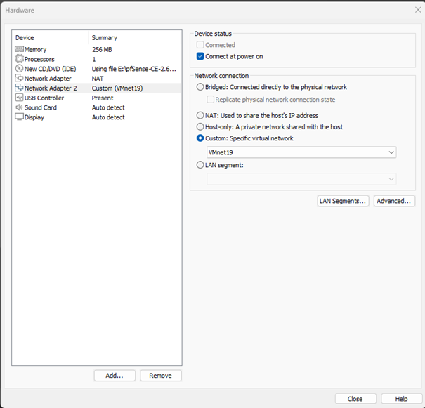
Une fois sur la machine nous décidons bien sûr de l’installer
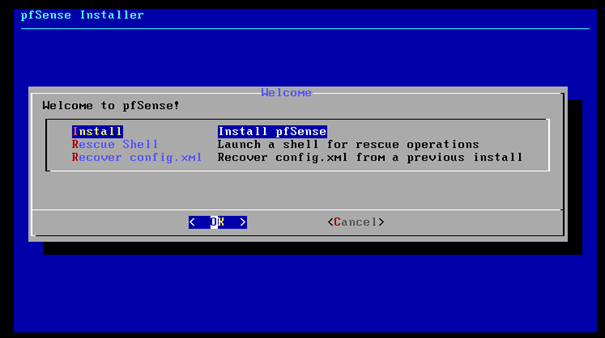Nous sélectionnons après le clavier français ainsi que la répartition Auto (2FS). Nous arrivons donc ensuite sur la page principale de pfsense (après redémarrage)
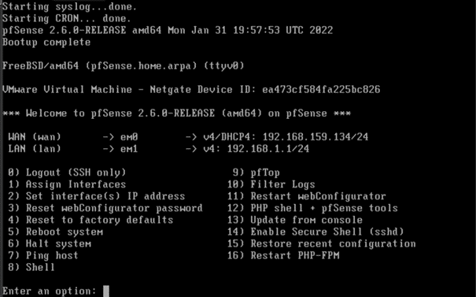2. Configuration LAN
Nous allons ensuite configrer le LAN pour ce faire nous cliquons sur l’option Set Interface(s) IP adress (option 2)
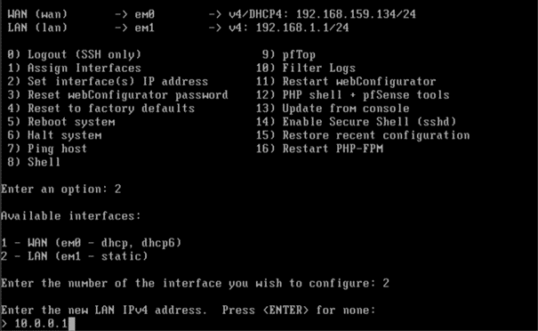Ici nous allons définir une étape importante nous choisissons comme masque de sous réseau le 29 car nous n’avons pas plus de 6 machines à gérer dans notre réseau et le sous réseau 29 vaut :
(2 ** 3) – 2 = 8 exactement ce dont nous avons besoin.
Nous laissons ensuite l’adresse de passerelle se créer automatiquement ainsi que l’adresse IP V6 aussi
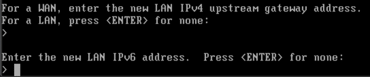3. Configuration DHCP,IP,HTTP
Nous activons le DHCP par défaut pour éviter les bug d'IP similaire
Puis nous choisissons les adresse IP de début et de fin de notre réseau :
Notre réseau débute sur l’adresse "10.0.0.0" et se termine donc sur l’adresse "10.0.0.7" avec donc une longueur de 8 IP (moins les deux cités ci-dessus).
Nous activons ensuite le protocole HTTP afin d’avoir accès au site web de configuration de pfsense
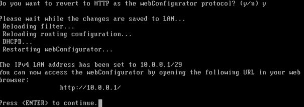Une fois faits-nous pouvons démarrer notre windows afin d’accéder au site pfsense
Nous commençons par vérifier que la carte réseau est bien sur le réseau vmnet19
Puis nous démarrons la machine pour accéder au site web avec pour utilisateur "admin" et mot de passe "pfsense"
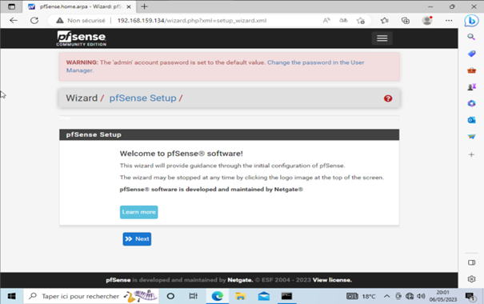Nous gardons toutes les options proposées par défaut jusqu’à que nous arrivons au changement de mot de passe admin ou nous avons mis le mot de passe "pare-feu"
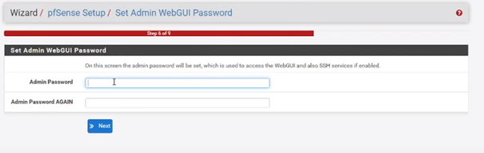Nous arrivons donc à la fin de la configuration du pare-feu
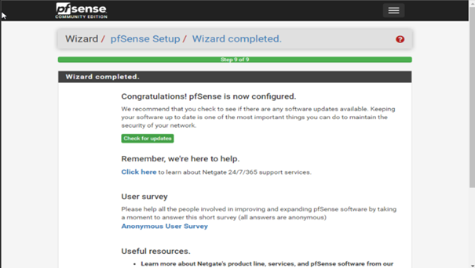Nous pouvons donc voir que notre machine à bien accès à internet ainsi que son IP est correcte
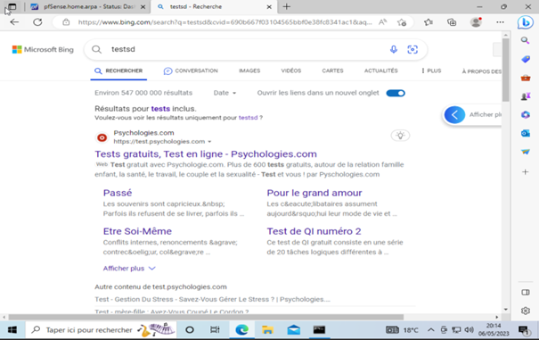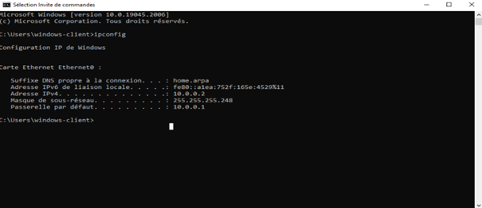
1. Mise à jour du Système
Nous commençons toujours par la mise à jour du système avant d’installer de nouvelles choses sur notre machine, pour ce faire nous exécutons la commande: "apt update && apt upgrade "

2. Installation D'Apache
Conformément aux consignes nous allons ensuite installer le système apache2 sur notre machine, pour se faire on exécute la commande: "apt install apache2"

Apache2 étant déjà installé nous passons à la suite.
3. Installation PHP et MariaDB
Nous installons ensuite php avec la commande: "apt install php php-mysql"

Puis nous installons MariaDB serveur avec la commande: "apt install mariadb-server"

Ainsi que MariaDB client avec la commande: "apt install mariadb-server"

4. Ajout base de données MariaDB
Nous créons ensuite une base de données avec MariaDB pour ce faire nous utilisons les commandes :
"- systemctl enable mariadb"
"-systemctl start mariadb"
"-systemctl status mariadb"


Nous pouvons voir que la base de données est activée maintenant.
5. Réglage du serveur

Maintenant que notre serveur est fonctionnel comme nous pouvons le voir sur la capture présente ci-dessus, il faut maintenant le configurer pour ce faire nous essayons tout d’abord de changer le fichier html. Pour ce faire nous localisons le fichier html et le remplaçons par le nôtre puis l’on redémarre le serveur: "cd /var/www/html"

Nous ouvrons ensuite un éditeur de fichier (nano) avec la commande: "nano test.html"

J’ai écrit dans le fichier puis je l’enregistre sous le nom index.html

On m’averti que le fichier index.html sera écrasé, je confirme afin de remplacer la page par défaut.
Je redémarre ensuite mon serveur web avec la commande: "systemctl restart apache2"
Nous voyons donc ensuite que le serveur fonctionne bien à la bonne adresse IP depuis mon Windows.